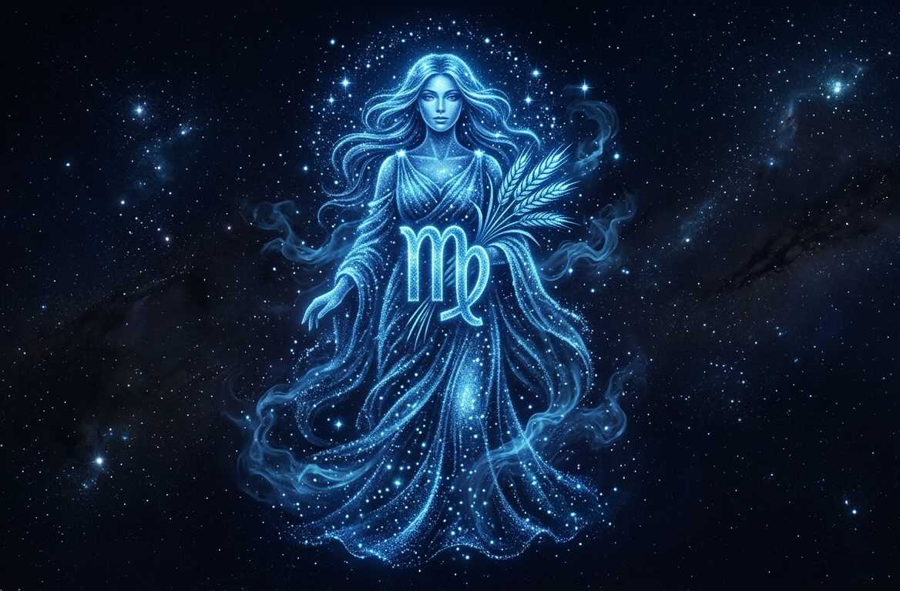

Virgem

O signo de Virgem é o sexto do zodíaco e está associado à organização, praticidade e atenção aos detalhes.
Regido pelo planeta Mercúrio, Virgem tem forte ligação com a análise, o raciocínio lógico e a busca pela perfeição.
Pessoas virginianas costumam ser responsáveis, observadoras e muito dedicadas, sempre procurando fazer tudo da melhor forma possível.
Gostam de ordem, limpeza e planejamento. Por outro lado, podem ser críticas, exigentes e perfeccionistas demais.
Virgem é um signo de elemento terra, o que reforça seu lado prático, confiável e realista. Em resumo, virginianos são conhecidos por sua disciplina, inteligência e cuidado com os detalhes.